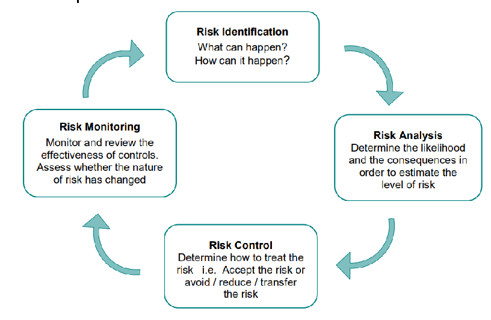
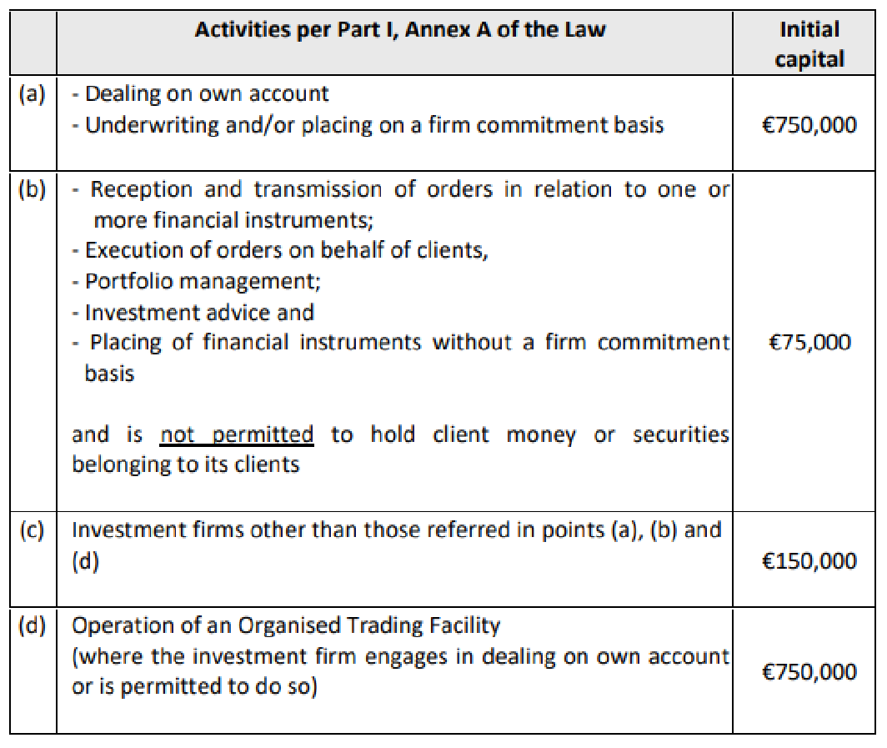
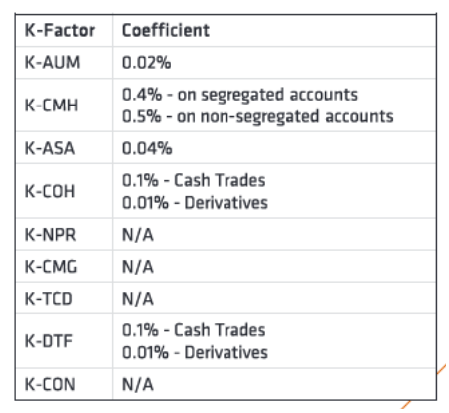
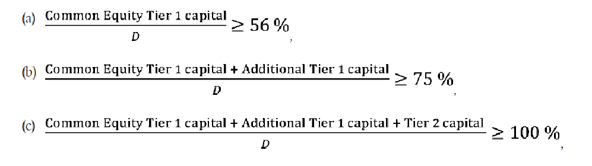
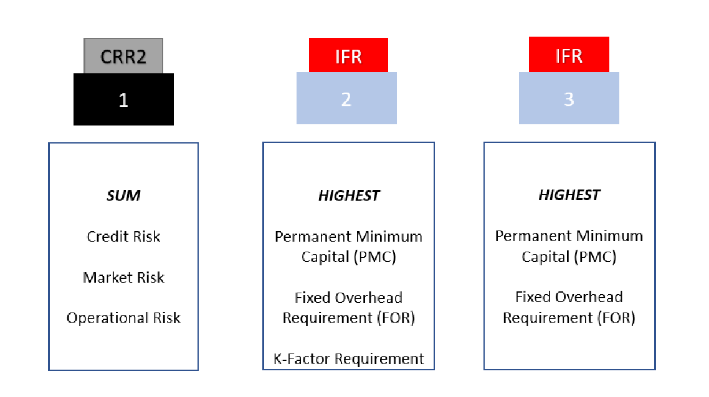

DISCLOSURE
The Disclosure and Market Disciple Report for the year 2021 has been prepared by Luna Wealth Asset Management Ltd as per the requirements of Regulation (EU) 2019/2033 issued on 27 November 2019 by the European Commission and the Directive EU 2019-2034. Luna Wealth Asset Management Ltd states that any information that was not included in this report was either not applicable on the Company’s business and activities -OR- such information is considered as proprietary to the Company and sharing this information with the public and/or competitors would undermine our competitive position.
Luna Wealth Asset Management Ltd is regulated by the Cyprus Securities and Exchange Commission under License number 379/19.
Contact Us
Address: 40 Themistokli Dervi, Office 201, 1066, Nicosia
Tel: +357 22007111
Fax: -
Website: www.lunawealth.com
Email: info@lunawealth.com
The Board of Directors is ultimately responsible for the risk management framework of the Company. The Risk Management Framework is the sum of systems, policies, processes and people within the Company that identify, assess, mitigate and monitor all sources of risk that could have a material impact on the Company’s operations.
The Board of Directors approves in full the adequacy of Risk Management arrangements of the institution providing assurance that the risk management systems in place are adequate with regards to the institutions’ profile and strategy.
1. Introduction
1.1. Investment Firm
Table 1: Company Information
| CIF Authorization date | 23/08/2019 |
|---|---|
| CIF license number | 379/19 |
| Company Registration Date | 06/12/2017 |
| Company Registration Number | HE 377224 |
| Investment Services | |
| Reception and transmission of orders in relation to one or more financial instruments | |
| Execution of orders on Behalf of Clients | |
| Dealing on Own Account | |
| Portfolio Management | |
| Provision of investment advice | |
| Ancillary Services | |
| Safekeeping and administration of financial instruments, including custodianship and related | |
| services | |
1.2. Purpose
The present report is prepared by Luna Wealth Asset Management Ltd (the “Company”), a Cyprus Investment Firm (“CIF”) authorized and regulated by the Cyprus Securities and Exchange Commission (the “CySEC”, the “Commission”) under the license number 379/19 and operates in harmonization with the Markets in Financial Instruments Directive II (“MIFID II”).
In accordance with the Regulation (EU) 2019/2033 (the Investment Firm Regulation, “IFR”), which was introduced in late 2019, the Company is required to disclose information relating to its risk exposure and management, capital structure, capital adequacy as well as the most important characteristics of the Company’s governance arrangements, including its remuneration policies and practices. The scope of this report is to promote market discipline and to improve transparency of market participants.
This document is updated and published annually; it will, however, be published more frequently if there are significant changes to the business (such as changes to the scale of operations, range of activities etc.). CySEC is responsible for implementing and enforcing the European Investment Firm Directive 2019/2034 (“IFD”) a capital adequacy framework consisting of three ‘pillars’:
- Pillar I sets requirements which include minimum regulatory capital, liquidity buffer and concentration risk limits
- Pillar II requires firms to have in place sound, effective, and comprehensive arrangements, strategies and processes to assess and maintain on an ongoing basis the amounts, types and distribution of internal capital and liquid assets that they consider adequate to cover the risks that they pose or are exposed to. This is achieved through the Internal Capital and risk assessment process (“ICARA”)
- Pillar III complements Pillars I and II and improves market discipline by requiring firms to disclose information on their capital resources and Pillar I capital requirements, risk exposures and their risk management framework
The new IFR/IFD prudential regime revises capital requirements, capital composition, liquidity requirements, reporting, disclosure, governance, remuneration and supervision of investment firms as set out in CRR/CRD and MiFID. The aim of the new framework is to introduce more proportionate and risk sensitive rules for investment firms. Under the new framework, the vast majority of investment firms in the EU will no longer be subject to rules that were originally designed for banks. The largest and most systemic investment firms, however, will remain subject to the same prudential regime as European banks (i.e. CRR and CRD). The IFR/IFD prudential regime applies to all MiFID authorised investment firms
The 2021 Pillar III Disclosure Report sets out both quantitative and qualitative information required in accordance with Part 6 of the IFR and in particular articles 46 to 53, which set the requirements of the disclosures.
The information contained in the Pillar III Market Discipline and Disclosure Report is audited by the Firm’s external auditor and published on the Company’s website, www.lunawealth.com, on an annual basis.
Furthermore, the Board of Directors and the Senior Management have the overall responsibility of the internal control systems in the process of capital adequacy assessment, and they have established effective processes to ensure that the full spectrum of risks faced by the Company is properly identified, measured, monitored and controlled to minimize adverse outcomes.
The Company’s business effectiveness is based on the guidelines of the risk management policies and procedures put in place. The Board of Directors, Internal Audit, Risk Manager, Compliance and Anti-Money Laundering Officer control and supervise the overall risk system so that all units charged with risk management perform their roles effectively on a continuous basis.
As with all Class 2 Investment Firms, the Company is exposed to a variety of risks and in particular to Risk to Market, Risk to Firm and Risk to Client. More information can be found in the sections below.
The Company is making the Market Discipline Disclosure on a solo basis.
1.3. The Company
Luna Wealth Asset Management Ltd, as a CIF, operates in Cyprus, offering discretionary portfolio management services to high net worth individuals and employs 7 employees in its offices.
The Company has a stable business model, and this is reflected in:
- A well-balanced capital allocation between the Company’s operations
- A balanced business model that is diversified across various jurisdictions in terms of both counterparties and client markets.
The Company’s growth strategy focuses on its existing areas of expertise and the quality of its customer base. The Company strives for sustainable profitability consistent with its cost of capital and a balanced business model. To this end, the Company:
- Seeks to contain the volatility of its results
- Calibrates its capital ratio to ensure a significant safety margin relative to the minimum regulatory requirements
- Ensures sufficient resilience in scenarios of liquidity shortages
- Tightly controls its foreign-exchange risks
The Company aims to maintain a diversified customer base.
The Company ensures that compliance rules are rigorously respected, especially in the area of anti-money laundering and counterterrorism financing. The Company monitors the behaviour of its employees with regard to customers and all its stakeholders, as well as the integrity of its investment and financial practices.
The Company considers its reputation to be an asset of great value that must be protected to ensure its sustainable development. The prevention and detection of the risk that could harm its reputation are integrated within all the Company’s operating practices. The Company’s reputation is protected by making its employees aware of the values of responsibility, ethical behaviour and commitment.
1.4. Regulatory Supervision
The minimum capital requirements as of 31 December 2021 for the CRD IV were calculated in accordance with the ‘Pillar I’ rules as set out by the Laws and Regulations, published by the CySEC. All CIFs under CySEC’s authority must meet the requirements with respect to capital adequacy and market discipline, which are comprised by the following:
- Law 87(I)/2017: Provision of Investment services, the exercise of investment activities, the operation of regulated markets and other related matters (hereafter “the Law”)
- Law 165(I)/2021: Law to provide for the prudential supervision of investment firms
- Regulation (EU) 2019-2033_Investment Firm Regulation
- Regulation (EU) No. 575/2013 – Capital Requirements Regulation
- Regulation (EU) No. 648/2012 – European Markets Infrastructure Regulation
- Commission Implementing Regulation (EU) 2021/2284
- Directive 2013/36/EU on access to the activity of credit institutions and the prudential supervision of credit institutions and investment firms, amending directive 202/87/C and repealing Directives 2006/48/EC and 2006/49/EC – Capital Requirements Directive IV
- Directive (EU) 2019-2034_Investment Firm Directive
1.5 Risk Management Objectives and Policies
In order to ensure an effective risk management, the Company has adopted the Three Lines of Defence model which represent an approach to providing structure around risk management and internal controls within an organization by defining roles and responsibilities in different areas and the relationship between those different areas.
The First Line of Defense is implemented by the unit, component or business function that
performs daily operation activities, especially those that are the front lines of the organization.
In this case, they are expected to:
| • Ensure the conductive control environment in their business unit. | |
|---|---|
| • Implement risk management policies on their roles and responsibilities, especially | |
| in activities that lead to corporate growth. They are expected to be fully aware of the | |
| risk factors that should be considered in every decision and action. | |
| • Be able to execute effective internal control in their business units, as well as the | |
| monitoring process and maintaining transparency in the internal control itself. | |
| The Second Line of Defense is executed by risk management function which is expected to: | |
• Be responsible for risk management development, monitoring process and the implementation of the company’s overall risk management. • Monitor and ensure that all business functions being implemented in accordance with risk management policies and standard operating procedures that have been established by the company. • Monitor and report to department with the highest accountability on complete company’s exposure to risks.
The Third Line of Defense comprises by the Internal Audit Function which is responsible for:
- providing assurance to the Board on the adequacy of design and operational effectiveness of the systems of internal controls.
- ensure that the responsibilities of each Function are discharged properly
- reviews the Company’s relevant policies and procedures. Internal Audit works closely with both the First and Second Lines of Defence to ensure that its findings and recommendations are taken into consideration and followed, as applicable.
- Ensure the effectiveness of the First and Second Line of Defense
1.5.1 Risk Management Framework
Risk exists in every aspect of the Company’s business throughout its operating environment and is a core consideration within the Strategic Plan. The Company’s approach to risk management is based on the principle that risk management capability must be embedded within the businesses’ front-line teams to be effective. This overriding principle embodies the following concepts:
- Senior Management and Risk Management Committee use the RMF which assists in the appropriate balancing on both the risk and reward components; and
- Employees are responsible for risk management in their day-to-day activities
The Company has established an effective risk oversight structure and the necessary internal organisational controls to ensure that the Company has adequate risk identification and management. At the same time, this leads to the establishment of the necessary policies and procedures that helps the Company to be ccompliantt with the applicable legislation
1.5.2 Risk Statement
The Company is exposed to a variety of risks and has significant exposure to the economies and financial markets. Following the outbreak of COVID 19, there is a lot of volatility, and the economy remains unstable. The Company follows the guidelines of the government and CySEC in order to monitor assess the impact of COVID 19 and at the same time ensure the business continuity.
The Company has in place a business continuity and disaster recovery plan (BCDR) which is tested regularly in order to identify any deficiencies by mitigating any possible risk. The role of BCDR is to minimize the effects of outages and disruptions on business operations. BCDR practices enable an organization to get back on its feet after problems occur, reduce the risk of data loss and reputational harm, and improve operations while decreasing the chance of emergencies. Based on the structure of the Company, the Management decided to form a strategy so that the employees in case of emergency can continue smoothly their work remotely from home.
During the Covid-19 outbreak, the relocation strategy was tested, and every employee was provided access at their home location. This was done by ensuring the safety of the data by giving access to the white-listed IP address of every employee.
The Company from the outset had purchased laptops instead of desktops to enable employees to take their laptops to an alternate location, in the event of a disaster. This way re-establishing operations can be achieved with relative ease due to the mobility of the company’s equipment and the accessibility of all software (browser-based) and data (cloud storage/backups). Moreover, the Company utilizes VoIP telephony systems with a digital PBX that allows re-establishment of telephony in any location, even without the actual hardware.
1.5.3 Risk Strategy
A risk management strategy is a key part of the risk management lifecycle and it is the responsibility of the BoD to formulate it and be responsible to monitor the implementation of the strategy. The risk strategy of the Company aims to provide to both Senior Management and employees a general risk framework for the management of the different types of risk in line with the overall risk management and risk bearing capacity of the Company. An effective risk strategy is created in order to identify the different types of risks that the company is exposed, analyse the likelihood and the consequences of each risk happening, determine ways that the Company will respond to that type of risks and finally to review and monitor the controls imposed to these risks.

1.5.4 Risk Appetite
Risk appetite expresses the level of risk that the Company is willing to assume within its risk capacity in order to achieve the business objectives, as defined by a set of minimum quantitative metrics and qualitative standards.
Risk capacity is defined as the maximum level of risk that the Company can assume in both normal and distressed situations before breaching regulatory constraints and its obligations to stakeholders.
Risk appetite is an integral element in the business planning, to promote the appropriate alignment of risk, capital and performance targets, while at the same time considering risk capacity and appetite constraints from both financial and non-financial risks. Top-down risk appetite serves as the limit for risk-taking for the bottom-up planning from the business functions.
The RAS articulates the Company’s appetite thresholds. This is important as it provides the definite view of the board direction of risk-taking activity. The BoD is comfortable that the Company undertakes and allows decision makers (including those with delegated authority and also those providing oversight) to exercise judgment with greater confidence and speed. The RAS aligns to the risks identified and defined under the RMF. The design and structure of the RAS takes into consideration best practice recently articulated by the European Central Bank which is aimed at ensuring Boards should be strongly involved in the validation process and monitoring of the RAS.
The BoD reviews and approves the risk appetite and capacity on an annual basis, with the aim of ensuring that they are consistent with the Company’s strategy, business and regulatory environment and stakeholder’s requirement.
In order to determine the risk appetite and capacity, it is the Risk Manager’s suggestion that various triggers and thresholds be set on a forward-looking basis and define the escalation of requirements for further actions. The Company then assigns risk metrics that are sensitive to material risks the company is exposed to and able to function as key indicators of financial health. In detail, the metrics, should be assessed under stress (such as IFR/IFD fully loaded CET 1 ratio) within the regularly performed benchmark and more severe Company wide stress tests and compared to Red-Amber-Green (“RAG”) levels as defined in the table below.
Risk Appetite Thresholds for key metrics:
| Red-Amber-Green (“RAG”) levels | CET1 ratio | Total Ratio | Own funds |
|---|---|---|---|
| • Normal | >75% | >150% | >1,000,000 |
| • Critical | 56% – 75% | 100% -150% | 750,000 – 1,000,000 |
| • Crisis | <56% | <100% | <750,000 |
Throughout the year 2021, the Company has remained in the normal levels with regard to the CET1 ratio and Total Ratio, as well as the amount of Own funds as defined in the table above. In the event that the desired risk appetite is breached under either normal or stressed scenarios, these breaches are highlighted to the Senior Management, and ultimately to the BoD. In addition, the Company has in place well-documented Risk Management procedures that describe the immediate actions during an adverse event.
1.5.5 Risk Culture The company seeks to promote a strong risk culture throughout the organization. The aim is to help reinforce the Company’s resilience by encouraging a holistic approach to the management of risk and return throughout the organization as well as the effective management of risk, capital and reputational profile. The Company actively take risks in connection to the business and as such the following principles underpin the risk culture within the organization:
- Risk is taken within a defined risk appetite
- Every risk taken needs to be approved within the RMF
- Risk taken needs to be adequately compensated; and
- Risk should be continuously monitored and managed
Employees at all levels are responsible for the management and escalation of risks. The Company expects all employees to exhibit behaviours that support a strong risk culture. The Company has communicated the following risk culture behaviours through various communication vehicles:
- Being fully responsible for the risks
- Being rigorous, forward looking and comprehensive in the assessment of risk
- Inviting, providing and respecting challenges
- Troubleshooting collectively and
- Placing the Company and its reputation at the heart of all decisions.
Throughout 2021, the Company when setting up its training program for the year has taken into consideration the following:
➢ which employees require training ➢ what is the content of the training provided; (e.g. legal framework, transactions monitoring, procedures for reporting suspicious transactions/ activities, typologies/case studies of suspicious activities etc.) ➢ what form the training will take ➢ how often training should take place ➢ how employees will be kept up to date with emerging risk factors for the regulated entity.
To aid with the holistic assessment of risk culture, Company has developed a Risk Culture Framework. The Framework defines the levels that contribute to the evolution of strong risk culture, as well as the minimum criteria which should be met.
2. Corporate Governance
2.1 The Board of Directors
The risk oversight function of the board of directors has never been more critical and
challenging than it is today. Rapidly advancing technologies, unstable economic conditions,
pandemic outbreak, political and geographical issues increase the need for effective risk
management procedures. Risk management is not simply a business and operational
responsibility of management—it is a governance issue that is squarely within the oversight
responsibility of the board. Directors should—through their risk oversight role prioritize risk
management. Directors should satisfy themselves that the risk management policies and
procedures designed and implemented by the company’s senior executives and risk manager
are consistent with the company’s strategy and risk appetite; that these policies and procedures
are functioning as directed; and that necessary steps are taken to foster an enterprise-wide
culture that supports appropriate risk awareness, behaviors and judgments about risk, and that
recognizes and appropriately addresses risk-taking that goes beyond the company’s determined
risk appetite.
The board and relevant committees should work with management to promote and actively cultivate a corporate culture and environment that meets the board’s expectations and is aligned with the company’s strategy.
2.2 Directorships held by Members of the Management Body
In 2021, the members of the Management body of the Company, have taken seats in other Company boards. In line with this, the following table indicates the number of positions that each member holds:
Table 2: Directorships held by the Management Body
| Name | Position in the CIF | Directorships (Executive) | Directorships (Non-executive) |
|---|---|---|---|
| Demetris Hadjiossif | Executive Director – General Manager | 1 | 2 |
| Dmitry Voznesenskiy | Executive Director – CEO | 1 | 0 |
| Chrysostomos Kalos | Non - Executive Director | 1 | 1 |
| Martha Lambrianou | Non - Executive Director | 1 | 2 |
2.3. Board Recruitment
One of the BoD’s main responsibilities is to identify, evaluate and select candidates for the Board are ensure appropriate succession planning. The Senior Management is assigned the responsibility to review the qualifications of potential director candidates and make recommendations to the BoD.
The persons proposed for the appointment should have specialized skills and/or knowledge to enhance the collective knowledge of the BoD and must be able to commit the necessary time and effort to fulfil their responsibilities.
Factors considered in the review of potential candidates include:
- Specialized skills and/or knowledge in accounting, finance, banking, law, business administration or related subjects
- Knowledge of an experience with financial institutions (“fit-and-proper” test)
- Integrity, honesty and the ability to generate public confidence.
- Knowledge of financial matters including understanding financial statements and financial ratios
- Demonstrated sound business judgment
- Risk Management/Compliance experience and/or regulatory framework knowledge
2.4. Diversity Strategy
Diversity is increasingly seen as an asset to organizations and linked to better economic performance. It is an integral part of how the Company does business and imperative to commercial success.
The Company recognizes the value of a diverse and skilled workforce and management body, which includes and makes use of differences in the age, skill, experience, background, race, and gender between them. A balance of these differences is considered when determining the optimum composition.
The Company is committed to creating and maintaining an inclusive and collaborative workplace culture that will provide sustainability for the organization into the future. This is also documented as best practices in the Corporate Governance Code of many EU countries.
2.5. Risk Management Committee
The Company has established a Risk Committee which directly reports to the Board of Directors; and two meetings were held in 2021.
The Risk Management Committee (“RMC”) advises the Board of Directors on the overall strategy and the appetite to all kinds of risks, both current and future and helps the Board of Directors in its verification that the risk strategy is adequately implemented. In particular, the RMC is responsible for:
- Reviewing the risk control procedures and is consulted about setting overall risk limits
- Reviewing on a regular basis the strategies, policies, procedures and systems used to detect, manage and monitor liquidity risk and submitting its conclusions to the Board of Directors
- Reviewing the polices in place and the reports prepared to comply with the regulations on internal control
- Reviewing the policy concerning risk management and the monitoring of off-balance sheet commitments
- Reviewing whether the incentives provided by the compensation policy and practices are compatible with the Company’s situation with regard to the risks it is exposed to, its share capital, its liquidity and the probability and timing of expected benefits.
2.6 Investment Committee
The Investment Committee is responsible for the formalization of the Investment Policy of the Company and related issues. The purpose of the Committee is to contribute towards the formalisation of the Company’s Investment Policy including the Company’s policy for Portfolio Management services to clients and provide the framework on which investment decisions for Portfolio Management services to clients shall be based and for the Company’s Dealing on Own Account investments. In that context the Committee shall receive the relevant market information and prepares recommendations on the Investment Policy to be approved by the Board of Directors.
The Investment Committee reports directly to the Board of Directors. The chairman of the Committee shall be the General Manager. The Committee shall be also attended by the Head of the Portfolio Management Department. The members of the Committee shall be at least three and change only upon the approval of the Board. The Board of Directors is responsible by the passing of a relevant resolution for any amendment to the composition of the Investment Committee.
2.7. Other Governance functions
Compliance Officer
The Compliance officer is appointed by the Board of Directors by taking into account the nature, scale and complexity of the business of the firm, and the nature and range of investment services and activities undertaken in the course of that business and operate independently. The Compliance Officer has complete and timely access to all relevant data and information maintained by the Company. The person engaged in the Compliance function is not involved in the performance of services or activities they monitor. The Compliance officer reports directly to the Board of Directors.
The Compliance Officer monitors and assess the adequacy and effectiveness of the measures and procedures designed to detect any risk of failure by the Company to comply with its obligations under the Law and the actions taken to address any deficiencies. Also, the Compliance officer advises and assists the relevant persons who carry out investment services and activities, on how to comply with the Company’s obligations under the Law
Internal Auditor
In setting its scope, internal audit independently determines the key risks that the Company faces, including emerging and systemic risks, and how effectively these risks are being managed. The Internal Auditor is responsible for establishing, implementing and maintaining an internal audit plan governing all the above aspects. Internal audit makes a risk-based decision as to which areas within its scope should be included in the audit. The Internal Auditor ensures adequate coverage of matters of regulatory interest within the audit plan. In particular, based on the results of the risk-based assessment, the Internal Auditor undertakes reviews of key risk management functions, regulatory capital adequacy functions, regulatory and internal reporting functions, the regulatory compliance function and the finance function. The Internal Auditor is independent and reports to the Senior Management and the Board of the Company.
Money Laundering Compliance Officer
Money Laundering is the process by which proceeds generated from illegal activities are concealed to appear as legitimate earnings. Financial institutions are required to take preventive measures against money laundering by strictly adhering to prescribed procedures relating to client identification, record keeping, and staff training and education with regards to suspicious transactions. The Board of Directors has appointed a Money Laundering Compliance Officer (MLCO) who undertakes the principal role of preventing the concealing of income from proceeds of criminal and terrorist activities. The Company's employees should report knowledge of suspicious transactions to the MLCO immediately.
Risk Manager
The Board has appointed a Risk Manager who is responsible to establish, implement and maintain adequate risk management policies and procedures and to adopt effective arrangements, processes, and mechanisms to manage the risks relating to Company’s activities. Also, the risk manager provides reports and advise to the Risk Management Committee on the adequacy of risk management policies and procedures designed to identify and manage risks and for further reporting to the Board of Directors. The Board of Directors decides upon the Company’s risk management policies, in consideration of the recommendations of the Risk Manager and the Risk Management Committee.
2.8 Reporting and Control
In line with the requirements set out in the Cyprus Investment Firms Law and subsequent Directives, the Company has been able to maintain a good information flow to the Management body, as it can be seen below:
Table 3: Periodic Reporting Summary
| Report name | Report Description | Owner | Recipient | Frequency | Due Date |
|---|---|---|---|---|---|
| Annual Compliance Report | To inform the Senior Management & the BoD of the Company regarding the Performance of Compliance function during the year | Compliance Officer | Senior Management BoD, CySEC | Annual | 30/04/2022 |
| Annual Internal Audit Report | To inform the Senior Management & the BoD of the Company regarding the Internal Auditor during the year | Internal Auditor | Senior Management BoD, CySEC | Annual | 30/04/2022 |
| Annual Risk Management Report | Represents the work & activities undertaken by the Risk Manager during the year | Risk Manager | Senior Management BoD, CySEC | Annual | 30/04/2022 |
| Pillar III Disclosures (Market Discipline and Disclosure) | The Company is required to disclose information regarding its risk management, capital structure, capital adequacy and risk exposures | Risk Manager | Senior Management BoD, Public | Annual | 30/04/2022 |
| Financial Reporting | It is a formal record of the financial activities of the CIF | External Auditor | BoD, CySEC, CBC | Annual | 30/04/2022 |
| Capital Adequacy Reporting | A measure of the CIF’s capital. It is expressed as a percentage and is used to protect depositors and promote stability and efficiency of financial systems all over the world | Risk Manager/ Accounting | Senior Management, BoD, CySEC | Quarterly | 11/11/2021 11/02/2022 12/05/2022 11/08/2022 11/11/2022 |
| Monthly Prevention Statement | The statement indicates the total amount of cash deposits that the Supervised entity has accepted, the Internal Suspicion Reports and the Reports submitted to the Unit for Combating Money Laundering Offences | Compliance Officer | CySEC | Monthly | 15th of each month |
| Suitability Report | A report on the adequacy of arrangements established by the CIF, in relation to clients’ funds and financial instruments | External Auditor | BoD/CySEC | Annual | 30/04/2022 |
| Complaints Report | A report of Client’s complaints | Compliance Officer | CySEC | Monthly | 5th of each month |
| Quarterly Statistics | A report indicating the services offered by the company, Clients’ funds analysis / balances by geographical analysis of clients’ residence, client’s financial instruments/type of instrument, analysis for Cypriot clients, volume by geographical analysis of clients’ residence, income statement and statement financial | Compliance Officer | CySEC | Quarterly | 31/01/2022 30/04/2022 31/07/2022 31/10/2022 |
| position, rejected and terminated relationships | |||||
| Shareholder Statement | Notification statement indicating the names of its shareholders possessing qualifying holdings during the previous calendar year as well as its associates, as well as the sizes of such direct or indirect held holdings | Compliance Officer | CySEC | Annual | 31/01/2022 |
| Form 144-14- 11 ‘Prudential Supervision Information’ | Relevant information in order to facilitate CySEC’s supervisory role in the areas of assessment of ICAAP/annual audited financial statement and safeguarding of clients’ money | Risk Manager | Senior Management, BoD, CySEC | Annual | 30/06/2022 |
| Form 20-01 (Recovery Plan) | A report indicating the content and details of the recovery plans of CIF | Risk Manager | Senior Management, BoD, CySEC | Every two years | 30/09/2022 |
| Resolution Templates (XBRL) | Resolution reporting | Risk Manager | Senior Management, Board, Resolution Authority (CBC) | Annual | 30/04/2022 |
2.9. Internal capital and Risk Assessment (“ICARA’)
The IFD introduces the concept of the Internal Capital and Risk Assessment which is similar in some aspects to the Internal Capital Adequacy Assessment Process (“ICAAP”) but does include key differences such as the need to consider wind-down planning. All investment firms need to consider the way in which they calculated their Pillar 2 capital. Investment firms shall have in place sound, effective and comprehensive arrangements, strategies and processes to assess and maintain on an ongoing basis the amounts, types and distribution of internal capital and liquid assets that they consider adequate to cover the risks that they pose or are exposed to. The arrangements, strategies and processes shall be appropriate and proportionate to the nature, scale and complexity of the activities of the investment firm concerned and they shall be subject to regular internal review. ICARA includes liquidity adequacy assessment and contingent funding plan and liquidity stress testing. The risks to consider are as follow:
- Funding management (monitoring of cash flow)
- Intraday collateral management (margin calls and settlement)
- Off-balance sheet activities (liquidity offered to clients and client money)
- Unexpected obligations (litigation, redress of fines)
- Actual ability to liquidate assets
- Exchange rate risk
- Transferability of liquid assets
The ICARA process focus on the investment firm’s business model and its activities. From there, it identifies, assesses and estimates the potential harm to clients, to markets and to the firm itself. Also the Investment firms focus on risks to their financial adequacy from potential changes in book value of assets, changes in value of trading book positions and losses from potential failure of counterparties. Investment firms also need to consider the risk to themselves in light of the knock-on effect they may have upon their clients and the markets they operate in. Furthermore, a major difference of ICARA in regards to ICAAP is that investment firms have to consider wind-down as part of the ICARA process.
The Company maintains compliance with the ICARA as required under Pillar II of Basel III and its local implementation in Cyprus, through the risk management and governance framework, methodologies, processes and infrastructure.
2.10. Stress Tests
Stress testing is a key risk management tool used by the Company to rehearse the business response to a range of scenarios, based on variations of market, economic and other operating environment conditions. Stress tests are performed for both internal and regulatory purposes and serve an important role in:
- Understanding the risk profile of the Company
- The evaluation of the Company’s capital adequacy in absorbing potential losses under stressed conditions. Stress testing takes place in the context of the Company’s ICARA on an annual basis
- The evaluation of the Company’s strategy: Senior Management considers the stress test results against the approved business plans and determines whether any corrective actions need to be taken. Overall, stress testing allows senior management, to determine whether the Company’s exposures correspond to its risk appetite
- The establishment or revision of limits: Stress test results, where applicable are part of the risk management processes for the establishment or revision of limits across products, different market risk variables and positions of the Company
The ultimate responsibility and ownership of the Company’ stress testing policy rests with the Board of Directors. If the stress testing scenarios reveal vulnerability to a given set of risks, the management should make recommendations to the Board of Directors for mitigation measures or actions. These may vary depending on the circumstances and include one or more of the following:
- Review the overall business strategy, appetite, capital and liquidity planning
- Review limits
- Reduce underlying risk positions through risk mitigation strategies
- Consider an increase in capital
- Enhance contingency planning
3. Investment Firm Regulation & Investment Firm Directive
3.1 Background
The European Parliament on 16 April 2019 has adopted a new, comprehensive regulatory regime for investment firms: the Investment Firm Directive (“IFD“) and Investment Firm Regulation (“IFR“) which intended to replace the Regulation (EU) No. 575/20213.
While small and “non-interconnected” firms in particular will benefit from less regulation, the legislation for “systemically relevant” investment firms means no less than equal treatment with credit institutions in the sense of a level playing field – accordingly, they will fall entirely under the previous regulatory framework (i.e. Capital Requirements Regulation 575/2013 (“CRR”)). As a result, all other investment firms will no longer be subject to the CRD/CRR framework, which is primarily intended for banks. The final vote of the European Parliament on the legislation took place in mid-April 2019.
The EU’s new IFR/IFD framework entered into force in December 2019 and is applicable for all EU Investment Firms from June 26, 2021. The EU’s new IFR/IFD framework reshapes how investment firms calculate their regulatory capital requirements and at what level these need to be maintained as of June 2021. All firms in scope of the IFR/IFD need to fall within a specific class, based on their regulated activity but also within certain quantitative metrics in the form of “K-Factors”.
Systemically important and larger risky investment firms (i.e., Class 1) are treated either as credit institutions or are held to the same rules under the CRR 2/CRD 5 framework and are subject to SSM and SRM supervision. All other investment firms (Class 2 and 3) in the EU became subject to the new IFR/ IFD framework, which includes a consolidated set of regulatory capital and liquidity requirements with limited waivers along with rules on internal models, governance, remuneration and disclosure. The Company is classified as a Class 2 Investment Firm.
3.2 Scope
IFR and IFD apply to all investment firms authorised and supervised under the European Directive 2014/65/EU (MIFID II). In Cyprus, this Directive was transposed by the Investment Services and Activities and Regulated Markets Law of 2017 (the ‘Law’). The new regulatory framework provides the following benefits for investment firms and supervisors:
- Lower regulatory costs – much more proportionate regulatory reporting and disclosure requirements to investment firms, particularly for smaller, non-interconnected investment firms
- Better alignment of requirements to business models – the new K-factor approach better aligns with the business models used by investment firms than existing regimes.
- Strengthened supervisory dialogue – the linking of requirements between business model and risk of harm should allow supervisors and investment firms to focus during the supervisory review process on mitigating the risk of harm in a way that aligns with how the investment firm thinks about its business
- Improved competition – all investment firms carrying out the same investment activity are treated in a simpler and more consistent manner
- Better prudential outcomes – the new regime should improve prudential standards for investment firms overall. This should improve overall confidence in the financial resilience of investment firms and the industry among customers, counterparties and where relevant shareholders.
3.3 Rationale behind the new prudential framework
- 1.The CRR & CRD IV is largely based on successive iterations of the international regulatory standards set for large banking groups by the Basel Committee on Banking Supervision and only partially address the specific risks inherent to the diverse activities of a large number of investment firms. It was therefore necessary to address the specific vulnerabilities and risks inherent to those investment firms by means of appropriate and proportionate prudential arrangements at European Union level.
- 2.Investment firms generally do not have large portfolios of retail and corporate loans and do not take deposits. The likelihood that their failure can have a detrimental impact on overall financial stability is lower than in the case of credit institutions. The risks faced and posed by most investment firms are thus substantially different to the risks faced and posed by credit institutions and such differences should be clearly reflected in the prudential framework of the European Union.
- 3.The new prudential framework for investment firms takes into account the particular business practises of different types of investment firms and especially their size and interconnectedness with other financial and economic actors. The new prudential requirements are calibrated in a manner proportionate to the type of investment firm, the best interests of the clients of that type of investment firm and the promotion of the smooth and orderly functioning of the markets in which that type of investment firm operates. They also mitigate identified areas of risk and help ensure that, if an investment firm fails, it can be wound down in an orderly manner with minimal disruption to the stability of financial markets.
3.4 Permanent Minimum Requirement (PMR)
Article 9 of the IFD introduces new initial capital requirements for the authorization of all Investment Firms required pursuant to Art.15 of Directive 2014/65/EU (section 16 of the Law) to provide any of the investment services or perform any of the investment activities listed below:

3.5 Classification of investment firms
IFR and IFD introduce a new classification system for investment firms, based on their activities, systemic importance, size and interconnectedness, as follows:
Categorisation of Investment firms:
Class 1A
The firm that, carries out any of the activities referred to in points (3) and (6) of Section A of Annex I to Directive 2014/65/EU (points (3) and (6) of Part I, Annex I of the Law)4 , but is not a commodity and emission allowance dealer, a collective investment undertaking or an insurance undertaking and meets any of the conditions below shall be considered as systemically important firm and will seek authorisation as a credit institution, supervised under CRR2/CRDV capital framework (per Art. 62(3) of IFR that amends the definition of a credit institution in CRR):
- a)the total value of the consolidated assets of the undertaking is equal to or exceeds EUR 30 billion;
- b)the total value of the assets of the undertaking is less than EUR 30 billion, and the undertaking is part of a group in which the total value of the consolidated assets of all undertakings in that group that individually have total assets of less than EUR 30 billion and that carry out any of the activities referred to in points (3) and (6) of Section A of Annex I to Directive 2014/65/EU is equal to or exceeds EUR 30 billion;
- c)the total value of the assets of the undertaking is less than EUR 30 billion, and the undertaking is part of a group in which the total value of the consolidated assets of all undertakings in the group that carry out any of the activities referred to in points (3) and (6) of Section A of Annex I to Directive 2014/65/EU is equal to or exceeds EUR 30 billion.
Class 1B
The Investment firm, that carries out any of the activities referred to in points (3) and (6) of Section A of Annex I to Directive 2014/65/EU (points (3) and (6) of Part I, Annex I of the Law) 4 , but is not a commodity and emission allowance dealer, a collective investment undertaking or an insurance undertaking and meets any of the following conditions will remain as an Investment firm under CySEC’s supervision but will be supervised under CRR2/CRDV for prudential requirements(article 1(2) of IFR).
- a)total value of the consolidated assets of the investment firm is equal to or exceeds EUR 15 billion,
- b)the total value of the consolidated assets of the investment firm is less than EUR 15 billion, and the investment firm is part of a group in which the total value of the consolidated assets of all undertakings in the group that individually have total assets of less than EUR 15 billion and that carry out any of the activities referred to in points (3) and (6) of Section A of Annex I to Directive 2014/65/EU is equal to or exceeds EUR 15 billion, c) the investment firm is subject to a decision by the competent authority in accordance with Article 5 of IFD.
Class 2
An investment firm is categorized as Class 2 if it no longer meets any of the conditions mentioned below for class 3 firms. Class 2 investment firms will be subject to the new IFR/IFD regime.
Class 3
An investment firm is categorized as Class 3 if it meets all of the criteria below and thus qualifies as a small and non-interconnected investment firm (Art. 12(1) of IFR):
- (a)AUM (Assets Under Management) measured in accordance with Article 17 is less than EUR 1,2 billion;
- (b)COH (Client Orders Handled) measured in accordance with Article 20 is less than either: - EUR 100 million/day for cash trades; or - EUR 1 billion/day for derivatives;
- (c)ASA (Assets safeguarded and administered) measured in accordance with Article 19 is zero;
- (d)CMH (Client Money Held) measured in accordance with Article 18 is zero;
- (e)DTF (Daily Trading Flow) measured in accordance with Article 33 is zero;
- (f)NPR (Net Position Risk) or CMG (Clearing Margin Given) measured in accordance with Articles 22 and 23 is zero;
- (g)TCD (Trading Counterparty Default) measured in accordance with Article 26 is zero;
- (h)The on‐ and off‐balance‐sheet total of the investment firm is less than EUR 100 million;
- (i)The total annual gross revenue from investment services and activities of the investment firm is less than EUR 30 million, calculated as an average on the basis of the annual figures from the two‐year period immediately preceding the given financial year.
Investment firms under class 3 will be subject to the new IFR/IFD regime but with certain exceptions.
3.5. K – Factors
One of the most important innovations of the new EU regime. The risk categories it aims to cover better and reflect the potential harm that an investment firm can pose to customers and markets.
The aim of the K-factors is to provide a tailored and more appropriate method for setting sa risk based minimum own funds requirement for all types of investment firm compared to the previous regime. Its focus includes the potential to create harm to others.
Investment firms will only need to apply the K-factors that are relevant to their business model:
KFR = RtC + RtM + RtF

3.6 Types of Risk
3.6.1 Risk to Customer (RTC) The K-factors under RtC are proxies covering the business areas of investment firms from which harm to clients can conceivably be generated in case of problems.
K-AUM + K-CMH + K-ASA + K-COH
Assets Under Management (AUM) is the capital requirement relative to the value of assets that an investment firm manages for its clients under both discretionary portfolio management and non-discretionary arrangements constituting investment advice of an ongoing nature
K-AUM captures the risk of harm to clients from an incorrect discretionary management of client portfolios or poor execution and provides reassurance and client benefits in terms of the continuity of service of ongoing portfolio management and investment advise.
Client Money Held (CMH) is the capital requirement relative to the amount of client money that an investment firm holds, taking into account the legal arrangements in relation to asset segregation and irrespective of the national accounting regime applicable to client money held by the investment firm. It excludes client money that is deposited on a custodian bank account in the name of the client itself where the investment firm has access to the client money via a third party mandate
K-CMH captures the risk of potential for harm where an investment firm holds the money of its clients, taking into account whether they are on its own balance sheet or in third-party accounts And arrangements under applicable national law provide that client money is safeguarded in the event of bankruptcy, insolvency or entry into resolution or administration of the investment firm.
Assets Safeguarded and Administered (ASA) is the capital requirement relative to the value of assets that an investment firm safeguards and administers for clients, irrespective of whether assets appear in the investment firms’ own balance sheet or are in third party accounts.
K-ASA captures the risk of safeguarding and administering client assets and ensures that investment firms hold capital in proportion to such balances regardless of whether they are on its own balance sheet or in third party accounts
Client Orders Handled (COH) is the capital requirement relative to the value of orders that an investment firm handles for clients, through the reception and transmission of client orders and through the execution of orders on behalf of clients.
K-COH captures the potential risk to clients of an investment firm which executes orders for example as part of execution only services to clients or when an investment firm is part of a chain for client orders
The applicable K-Factor for the Company as of 31/12/2021 for calculating the RtC is K- AUM. The Assets under Management for the Company were calculated to be €79,237,000 and the K-Factor Requirement was €16,000.
3.6.2 Risk to Market (RTM) The K-factor for RtM for investment firms which deal on own account is based on the rules of market risk for positions in financial instruments in foreign exchange, and in commodities in accordance with Regulation (EU) No 575/2013.
K-NPR OR K-CMG
Net Position Risk (NPR) is the capital requirement relative to the value of transactions recorded in the trading book of an investment firm. It includes/applies to :
- All trading book positions, which include in particular positions in debt instruments, equity instruments, collective investment undertakings, foreign exchange and gold and commodities
- Positions other than trading book positions where those give rise to foreign exchange risk or commodity risk
K-NPR captures the net position risk in accordance with the market risk provisions of Regulation (EU) No 575/2013
Clearing Margin Given (CMG) is the capital requirement relative to the amount of total margin required by a clearing member of qualifying central counterparty where the execution and settlement of transactions of an investment firm dealing on own account take place under the responsibility of a clearing member of qualifying central counterparty.
K-CMG is an alternative to K-NPR to provide for market risk, that builds upon the systemic resilience created by EMIR and use of a clearing member. Based on the total margins an investment firm is required to give to a clearing member.
The Company is highly exposed to market risk due to foreign exchange and position risk on Traded Debt instruments and equities. The Risk to Market which includes the K-Net Position risk requirement forms 92% (EUR 186,000) of the total K-Factor requirement (EUR 202,000). The K-NPR is comprised with 56% (EUR 104,000) from foreign exchange risk and 44% (EUR 82,000) arises from the position risk from both equity and debt instruments.
3.6.3 Risk to Firm (RTF) The K-factors under RtF capture an investment firm’s exposure to their trading counterparties, concentration risk in an investment firm’s large exposures and operational risks form an investment firm’s daily trading flow.
K-TCD + K-DTF + K CON
Trading Counterparty Default (TCD) is the capital requirement relative to the exposures in the trading book of an investment firm in instruments and transactions giving rise to the risk of trading counterparty default.
- Over-the-counter (OTC) derivatives
- Repurchase transactions
- Securities and commodities lending or borrowing transactions
- Long settlement transactions
- Margin lending transactions
- Or any other securities financing transactions
K-TCD captures an investment firm’s exposure to the default of their trading counterparties.
Daily Trading Flow is the capital requirement relative to the daily value of transactions that an investment firm enters through dealing on own account or the execution of orders on behalf of clients in its own name.
K-DTF Captures the operational risks to an investment firm in large volumes of trades concluded for its own account or for clients in its own name in one day which could result from inadequate or failed internal processes, people and systems or from external events, based on the notional value of daily trades, adjusted for the time to maturity of interest rate derivatives in order to limit increases in own funds requirements, in particular for short term contracts where perceived operational risks are lower.
For the calculation of RtF, the Company takes into consideration the K-DTF which is applicable to its business activities. As of 31/12/2021 the Company’s Total Daily Trading Flow was €72,000 and the K-Factor requirement amounted to €72 (DTF multiplied by 0.1%)
Concentration risk (CON) arises from exposures of an investment firm to a client or a group of connected clients.
K-CON Captures concentration risk in relation to individual or highly connected counterparties with whom firms have exposures above 25% of their own funds or specific alternative thresholds in relation to credit institutions or other investment firms, by imposing a capital add-on in line with CRR for excess exposures above those limits. Investment firms that bridge the soft limits must maintain additional Own funds. In this case the maximum exposure value with regard to an individual client or group of connected clients shall not exceed:
- a)500% where 10 days or less have elapsed since the excess occurred
- b)in aggregate, 600% for any excesses that have persisted for more than 10 days
The Company is not exposed to any concentration risk as of 31/12/2021. The Company monitors daily the exposures to the counterparties in order to control the concentration risk and avoid bridging the soft limits which requires the company to maintain additional own funds.
4. Own funds
In accordance with CRD IV, institutions need own funds in sufficient quantity and quality to be able to absorb losses in a going or in a gone concern situation.
The Company throughout the year under review managed its capital structure and complied fully with all capital and liquidity requirements and operated well within the regulatory requirements.
The amount of own funds as of 31/12/2021 amounted to €1,535,397 and Total Capital Ratio was 204.72%, well above the 100% requirement.
4.1 Tier 1 & Tier 2 Regulatory Capital
According to Article 9 of the IFR which is aligned with Regulation (EU) No 575/2013, the total capital is the sum of CET1, AT1 and AT2.
Common Equity Tier 1 Capital (CET1 Capital)
According to CRR/CRDIV regulations, Common Equity Tier 1 capital is made up primarily of the following:
- Capital Instruments (provided that they meet specific conditions)
- Share premium accounts
- Retained Earnings (including audited interim profit or loss)
- Accumulated other comprehensive income and other disclosed reserved
- Funds for general banking risk
Deductions from Common Equity Tier 1 capital essentially involve the following:
- Losses for the current financial year
- Good will and other intangibles
- Deferred tax assets (DTAs) that rely on future profitability: Full amount is deducted – no longer subject to threshold tests
- All investment in own CET1 instruments, whether held directly or indirectly
- Non-Significant holdings of CET1 capital of financial sector entities (FSEs): Only BB holdings are considered of which full amount is deducted – no longer to threshold tests
- Significant holdings of CET1 capital of FSEs: full amount is deducted – no longer subject to threshold tests
- Qualifying holdings outside the financial sector or certain securitisation exposures, or equity exposures or free delivery transactions that otherwise will receive a 1250#5 risk weight
- The amount of items required to be deducted from AT1 that exceeds the CIF’s AT1 capital
Additional Tier 1 (AT1)
Additional Tier 1 Capital includes:
- Capital instruments (provided that they meet specific conditions). These instruments shall not qualify as CET1 or T2 capital
- Share premium accounts related to the instruments referred to in point above
- Capital instruments that meet the conditions of Article 52 of CRR
- Share premium accounts related to instruments in (a)
Deductions from AT1 items
- All investment in own AT1 instruments, whether held directly or indirectly
- Non-significant holding of AT1 capital of FSEs: only BB holdings are considered, of which the full amount is deducted – no longer subject to threshold tests
- Significant holdings of AT1 capital of FSEs
- The amount of items required to be deducted from T2 items that exceed the CIF’s T2 capital
- Amendments to the trigger event AT1 instruments and in the aggregate amount of AT1 instruments that is required to be written down or converted upon occurrence of a trigger event
Tier 2 Capital
Tier 2 capital includes:
- Capital instruments including subordinate loans that qualify as Tier 2 instruments (provided that they meet specific conditions). These instruments shall not qualify as CET1 or AT1 capital.
- Share premium resulting from the issue of instruments included in Tier 2 capital
- General credit risk adjustments of up to a maximum of 1.25% of Credit Risk RWAs calculated under the Standardised Approach
Tier 2 instruments are subject to gradual amortization during the final five years before maturity.
Deductions of Tier 2 Capital essentially apply to the following:
- All investment in own T2 instruments, whether held directly or indirectly
- Non-significant holdings of T2 capital of FSEs: Only BB holdings are considered of which the full amount is deducted – no longer subject to threshold tests
- Significant holdings of T2 capital of FSEs
4.2 Own Funds Composition
Investment firms shall have own funds consisting of the sum of their Common Equity Tier 1 capital, Additional Tier 1 capital and Tier 2 capital and shall meet all of the following conditions at all times:

As per article 10 of Commission Implementing Regulation (EU) 2021/2284, the CIFs shall make the disclosures on own funds required by Article 49(1) of Regulation (EU) 2019/2033 by using the templates of Annex VI to this Regulation and in accordance with the relevant instructions set out in Annex VII to this Regulation
The Company’s total capital is wholly comprised of CET1 Capital and among the capital ratios are shown on the table below:
Table 4: Composition of regulatory own funds
| (a) | (b) | |
|---|---|---|
| Amounts € 000 | Source based on reference numbers/letters of the balance sheet in the audited financial statements | |
| OWN FUNDS | 1,535 | |
| TIER 1 CAPITAL | 1,535 | |
| COMMON EQUITY TIER 1 CAPITAL | 1,535 | |
| Fully paid up capital instruments | 1,095 | 17 |
| Share premium | 827 | 17 |
| Retained earnings | -324 | |
| Accumulated other comprehensive income | ||
| Other reserves | ||
| Minority interest given recognition in CET1 capital | ||
| Adjustments to CET1 due to prudential filters | ||
| Other funds | ||
| (-)TOTAL DEDUCTIONS FROM COMMON EQUITY TIER 1 | -61 | |
| (-) Own CET1 instruments | ||
| (-) Direct holdings of CET1 instruments | ||
| (-) Indirect holdings of CET1 instruments | ||
| (-) Synthetic holdings of CET1 instruments | ||
| (-) Losses for the current financial year | -61 | |
| (-) Goodwill | ||
| (-) Other intangible assets | ||
| (-) Deferred tax assets that rely on future profitability and do not arise from temporary differences net of associated tax liabilities | ||
| (-) Qualifying holding outside the financial sector which exceeds 15% of own funds | ||
| (-) Total qualifying holdings in undertaking other than financial sector entities which exceeds 60% of its own funds | ||
| (-) CET1 instruments of financial sector entites where the institution does not have a significant investment |
(-) CET1 instruments of financial sector entities where the institution has a significant investment
| (-)Defined benefit pension fund assets | ||
|---|---|---|
| (-) Other deductions | ||
| CET1: Other capital elements, deductions and adjustments | -1 | 9 |
| ADDITIONAL TIER 1 CAPITAL | - | N/A |
| TIER 2 CAPITAL | - | N/A |
4.3 Reconciliation of Regulatory Capital
As per Article 49 (1) of the IFR, investment firms must disclose a full reconciliation of Common Equity Tier 1 items, Additional Tier 1 items, Tier 2 items and applicable filters and deductions applied to own funds of the investment firm and the balance sheet in the audited financial statements of the investment firm.
Table 5: Own funds: reconciliation of regulatory own funds to balance sheet in the audited financial statements
| a | b | c | |||
| Balance sheet as in published/audited financial statements | Under regulatory scope of consolidation | Cross reference to EU IF CC1 | |||
| As at period end € 000 | As at period end | ||||
| Assets - Breakdown by asset classes according to the balance sheet in the published/audited financial | |||||
| statements | |||||
| 1 | Non-current assets | ||||
|---|---|---|---|---|---|
| Property, plant and equipment | 27 | 13 | |||
| 2 | Current assets | ||||
| Receivables | 204 | 14 | |||
| Financial assets at fair value | 609 | 15 | |||
| Cash at bank | 716 | 16 | |||
| Total Assets | 1556 | ||||
| Liabilities - Breakdown by liability classes according to the balance sheet in the published/audited | |||||
| financial statements | |||||
| 1 | Current liabilities | ||||
| Payables | 20 | 19 | |||
Total Liabilities 20
| Shareholders' Equity | |||
|---|---|---|---|
| 1 | Share Capital | 1,095 | 17 |
| 2 | Share premium | 827 | 17 |
| 3 | Accumulated losses | -385 | 17 |
| Total Shareholders' equity | 1,536 | ||
4.4 Own funds requirements
Investment firms shall at all times have own funds in accordance with Article 9 of the IFR which amount to at least D, where D is defined as the highest of the following:
- a)The fixed overheads requirement
- b)The permanent minimum capital requirement (€750,000 for class 2 firm)
- c)The K-factor requirement

The Company as a Class 2 firm has a permanent minimum capital of €750,000 which is the highest value between the three applicable factors and it is used for the calculation of total capital ratio.
The Senior Management of the Company implements the capital management. As part of managing its capital, the Company ensures that its solvency level is always compatible with the following objectives:
- Maintaining its financial solidity and respecting the Risk Appetite targets
- Preserving its financial flexibility to finance organic growth
- Adequate allocation of capital among the various business lines according to the Company’s strategic objectives
- Maintaining the Company’s resilience in the event of stress scenarios
- Meeting the expectations of its various stakeholders: supervisors, debt and equity investors, rating agencies, and shareholders
The Company determines its internal solvency targets in accordance with these.
5. Fixed Overheads Requirement
The Fixed Overheads Requirement (FOR) shall amount to at least one quarter of the fixed overheads of the preceding year. Investment firms shall use figures resulting from the applicable accounting framework. If there has been a material change in the activities of the IF, the CA may adjust the amount of FOR. Where an investment firm has not been in business for one year from the date on which it started providing investment services of performing investment activities it shall use the projected fixed overheads included in its projections for the first 12 months’ trading, as submitted with its application for authorisation.
EBA, in consultation with ESMA, for the calculation of the fixed overhead requirement includes at least the following items for deduction: (a) staff bonuses and other remuneration, to the extent that they depend on the net profit of the investment firm in the respective year; (b) employees’, directors’ and partners’ shares in profits; (c) other appropriations of profits and other variable remuneration, to the extent that they are fully discretionary; (d) shared commission and fees payable which are directly related to commission and fees receivable, which are included within total revenue, and where the payment of the commission and fees payable is contingent on the actual receipt of the commission and fees receivable; (e) fees to tied agents; (f) non‐recurring expenses from non‐ordinary activities.
Below, it is the calculation of fixed overhead requirement based on the financial results of the company as of 31/12/2021.
Table 6: Fixed Overheads Requirement Calculation
| Amount € | |
|---|---|
| Annual Fixed Overheads of the previous year after distribution of profits | 1,423,789 |
| Fixed Overhead Requirement | 355,947 |
6.Liquidity Requirement
The IFR brings a new approach to managing liquidity in comparison to the CRR. While both the IFR approach and the CRR approach, which is the liquidity coverage ratio (LCR), result in investment firms holding enough High-Quality Liquid Assets (HQLA) to survive for a month, they differ in how they are calculated. Under the IFR, expenses in the form of the fixed overhead requirement are used as the relevant metric for the calculation whereas the LCR uses the expected net outflows over a 30-day stress scenario. As a result of these new requirements, firms must address technological, governance and reporting considerations and implications, which must be acknowledged through processes and control environment changes.
The IFR introduces a minimum quantitative liquidity requirement for all investment firms that requires investment firms to hold eligible liquid assets equivalent to at least one third of their fixed overhead requirements. The intention is that, by basing the minimum liquidity requirement on a proportion of the fixed overhead requirement, an investment firm should be able to meet its relevant overheads for at least a month by using such liquidity, in the event that other sources of cash-flow are unavailable. There is an additional requirement where firms provide guarantees to clients. This minimum requirement is designed to act as an appropriate baseline for all investment firms. Firms should consider, as part of the internal risk assessment process whether additional liquidity should be maintained above the fixed overhead requirement.
Competent authorities may exempt small and non-interconnected investment firms from that requirement. Investment firms may in exceptional circumstances and after approval by the competent authority, reduce the amount of liquid assets held for a short period of time. They shall also increase their liquid assets by 1.6% of the total amount of guarantees provided to clients. For the purpose of the regulation, not liquid assets are cash, short term deposits and financial instruments belonging to clients, even where held in the own name of the CIF. Also, various haircuts applied depending on the type of asset (i.e Level 1, Level 2a, Level 2B) to reduce the value that may be counted.
As of 31/12/2021, Liquidity requirement stands at:
Table 7: Liquidity Requirement and liquid assets
| Dec 31, 2021 (Audited) € | ||
|---|---|---|
| Liquidity Requirement | 118,649 | |
| Client guarantees | - | |
| Total Liquid Asset | 1,207,483 | |
| Unencumbered short term deposits | 715,938 | |
| Total eligible receivables due within | 30 | - |
days
| Level 1 Assets | - |
|---|---|
| Level 2A Assets | 453,760 |
| Level 2B Assets | 37,784 |
| Qualifying CIU shares/units | - |
|---|---|
| Total other eligible financial instruments | - |
Liquidity risk corresponds to the risk of the Company not being able to meet its cash or collateral requirements as they arise and at a reasonable cost. The Company’s primary objective is to ensure the funding of its activities in the most cost-effective way by managing liquidity risk and adhering to regulatory constraints. The liquidity system aims at providing a balance sheet framework with an assets and liabilities target structure that is consistent with the risk appetite defined by the Board of Directors.
- The assets structure should allow the businesses to develop their activities in a way that is liquidity-efficient and compatible with the target liabilities structure
- The liabilities structure is based on the ability of its businesses to collect financial resources from customers and the ability of the Company to sustainably raise financial resources on the markets, in accordance with its risk appetite
The principles and standards applicable to the management of liquidity risks are defined by the Company’s governing bodies, whose duties in the area of liquidity are listed below:
- The Company’s board of Directors (i) establishes the level of liquidity risk tolerance as part of the Risk Appetite exercise (ii) meets regularly to examine the Company’s liquidity risk situation, on a annual basis
- The Senior Management (i) sets budget targets in terms of liquidity (ii) allocates liquidity to the pillars
To minimize its exposure to liquidity risk, the CIF implements the below Liquidity Risk Mitigation Strategies:
- Regular analysis & reporting to the Board of Directors on the funding needs of the Company
- Monitoring of the Company’s exposures and diversification to avoid rise of concentration risk as per the internal policies
- Cash Management
7. Remuneration policy
“Remuneration” means all forms of payments or benefits provided directly or indirectly by firms to senior management, risk takers, staff engaged in control functions and any employee of the Company. The Remuneration Policy (hereinafter the “RP”) is the internal policy approved by the Board of Directors of the Company to dictate the remuneration of the Company’s staff.
The principles employed within the Company’s RP are appropriate to its size, internal organization and the nature, the scope and the complexity of its activities whilst adhering to the provisions for the Prudential Supervision of CIFs, Regulation (EU) No 575/2013 and Circular C031, C138 and C240 of the CySEC concerning the guidelines on remuneration policies and practises.
In addition, the RP and Company practices should ensure compliance with the conflicts of interest requirements set out in Section 24 of the Law and they should also ensure compliance with the conduct of business standards set out in Section 25 of the Law.
Aims and objectives
The RP has the following aims and objectives:
- Set out principles governing the Company’s Remuneration systems;
- To ensure that the Remuneration of Company staff is in line with the applicable regulations on remuneration and is accordingly monitored.
7.1 Remuneration system
The Company uses remuneration as a significant method of attracting and retaining key employees whose talent is vital to the Company’s long-term success. The remuneration mechanisms employed are well known management tools that factor in the staff’s skills, experience and performance, whilst supporting at the same time the Company’s long-term business objectives. The Company’s remuneration system takes into account the highly competitive sector in which the Company operates in, and the considerable amount of resources the Company invests in each member of staff.
7.1.1 Fixed Remuneration
The remuneration of staff consists of fixed monthly salaries although it does fluctuate to reflect different positions/roles depending on each position’s actual functional requirements, and it is set at levels which reflect the educational level, experience, accountability, and responsibility embedded in each position/role. Fixed remuneration is also set in comparison with standard market practices employed by the other market participants/competitors.
7.1.2Variable Remuneration
The Company has adopted a Key Performance Indicator (KPI) scheme to monitor, assess and review the performance of employees and reward them based on the achievement of personal, department and company goals. Individual, team and company goals carry different weights. Based on the assessment of their performance employees will receive a bonus of a monthly salary multiplied by a coefficient between 0.5 to 2.4.The Company will not incentivise sales of financial instruments or services via increased remuneration, variable remuneration or performance-related remuneration and no KPIs adopted for any employee or director is related to sales.
7.2 Remuneration of Senior Management, Personnel and Directors
Executive Directors and Senior Management shall be eligible for an annual remuneration paid in 12 instalments as may approved by the Board of Directors always taking into consideration the scale and complexity of the company’s operations, prevailing market conditions and geographical area of operation. The shareholder may recommend increments to the existing remuneration structure and the Board of Directors may approve them. Directors are also eligible to participate in the Provident Fund and to receive KPI bonus remuneration.
The Non-Executive / Independent Director will receive a yearly remuneration by way of Director’s fees invoiced to the Company. All non-executive members are required to attend Board of Directors meetings at a minimum frequency of once per month. Attendance via teleconference is accepted in cases where the director cannot appear in person due to overseas travel. Non-Executive Directors are not eligible to participate in the Provident Fund or receive KPI bonus remuneration.
Employees are entitled to fixed remuneration. For the fixed remuneration, the employees will be entitled to an annual remuneration paid in 12 instalments as may be approved by the Board of Directors. The fixed remuneration will include any statutory contributions (such as social insurance and national health system) by the employee. Formal performance appraisals take place annually (between January and March) to evaluate the performance of each employee based on the KPI system. The head of each department or any one of the senior management will perform the role of the appraiser. The remuneration that Employees receive for their professional activities at the Company must be stipulated definitively in their employment contracts. The employment contract and any subsequent amendments must be in written form. Employees are eligible to participate in the Provident Fund and to receive a KPI bonus remuneration.
Table 8: Aggregate Quantitative Information on Remuneration broken down by business area
| € | No. of staff | Fixed | Variable | Non-cash | Total |
|---|---|---|---|---|---|
| Front office 1 | 1 | 21,930 | - | - | 21,930 |
1 Brokerage/Dealing on own account/Investment advice/Portfolio Management – includes also 2 of the
executive directors which are not calculated to avoid miscalculation
| Middle office2 | 2 71,700 | - | - | 71,700 |
|---|---|---|---|---|
| Back office 3 | 2 48,204 | - | - | 48,204 |
| Management | 2 103,000 | - | - | 103,000 |
| Grand Total | 7 244,834 | - | - | 244,834 |
| € | No. of staff Fixed | Variable | Non-cash | Total |
| Senior Management | 2 103,000 | - | - | 103,000 |
| Non – Executive Directors | 2 24,000 | - | - | 24,000 |
| Grand total | 4 127,000 | - | - | 127,000 |
- *Only executive directors were included to the Senior Management
2 Risk Management /Compliance & MLCO
3 Client Administration/Information technology
8. Appendix – Specific References to IFR
| IFR Ref | High Level Summary | Compliance Reference | |||
|---|---|---|---|---|---|
| Scope | |||||
| 46 | Scope of disclosure requirements | 1.1 1.2 | |||
| Risk Management objectives and policies | |||||
| 47 | The risk management objectives and policies for each separate category of risk, including a summary of the strategies and processes to manage those risks and a concise risk statement describing the investment firm’s overall risk profile associated with the business strategy | 1.5 | |||
| Governance | |||||
| 48 (a) | the number of directorships held by members of the management body | 2.2 | |||
| 48 (b) | Policy on diversity of BoD members, its objectives and results against targets | 2.4 | |||
| 48 (c) | Disclosure whether a dedicated risk committee is in place, and number of meetings in the year | 2.5 | |||
| Own funds | |||||
| 49 (1)(a) | Requirements regarding capital resources table | 4.2 | |||
| 49 (1) (b) | 4.1 | ||||
| 49 (1) (c) | 4.1 | ||||
| 49 (2) | EBA shall develop implementation standards for points (a), (b), (c) above | N/A | |||
| Own funds requirements | |||||
| 50 (a) | Summary of institution’s approach to assessing adequacy of capital levels | 4.3 4.4 |
|---|---|---|
| 50 (b) | Result of ICAAP on demand from competent authority. | 2.9 |
| 50 (c) | the K‐factor requirements calculated, in aggregate form for RtM, RtF, and RtC, based on the sum of the applicable K‐factors | 3.5 3.6 |
| 50 (d) | Fixed overheads requirement | 5 |
| Remuneration policy and practises | ||
| 51 | Design characteristics of the remuneration system, including the level of variable remuneration, ratios between fixed and variable remuneration, aggregated quantitative information on remuneration, broken down by senior management and members of staff | 7 |
| Investment policy | ||
| 52 | Disclose the proportion of voting rights attached to the shares held directly or indirectly by the investment firm, a complete description of voting behaviour, an explanation of the use of proxy advisor firms, the voting guidelines | 2.6 |
| Environmental, social and governance risks | ||
| 53 | Disclose information on environmental, social and governance risks, including physical risks and transition risks, | N/A |